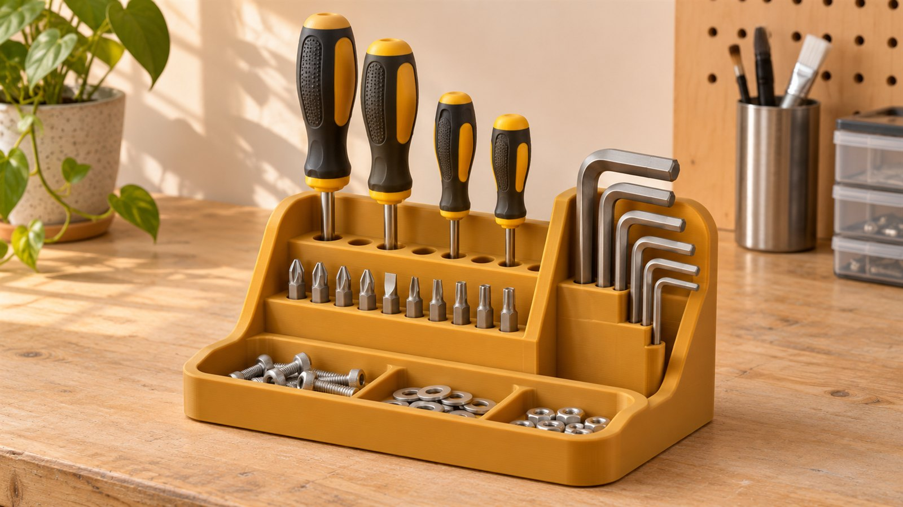
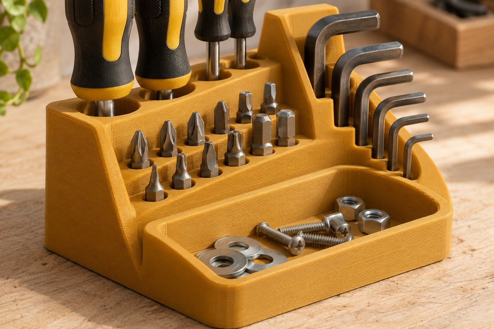
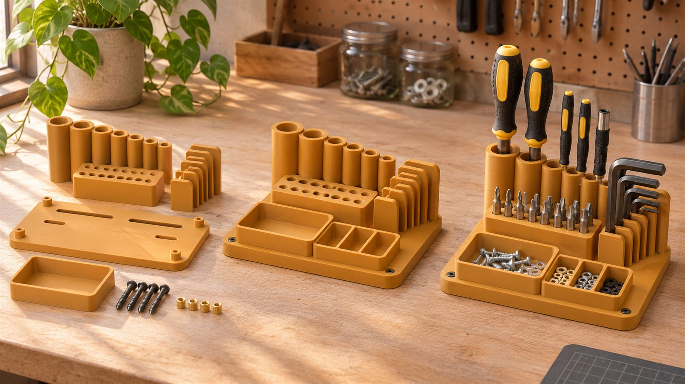

Настольный органайзер для рабочего набора. Отдельные гнёзда под отвёртки, биты и ключи — по вашим обмерам.

Глубина удерживает предмет, выемка под палец помогает достать его без усилия. Перед печатью измеряем не только рабочую часть, но и рукоятку.
Общий габарит 220 × 130 × 45 мм. Дно 3 мм, наружная стенка 2,4 мм. Для ящика нужен запас по высоте с установленными инструментами.
Эскиз в миллиметрах; внутренние гнёзда корректируются под набор.

Рукоятка доступна с двух сторон. Соседний инструмент не мешает захвату.
Пустое гнездо видно сразу. Биты сгруппированы по назначению.
Широкий вход направляет инструмент. Лоток удерживает снятый крепёж.

Пример — концепт для портфолио. Комплект инструментов, масса и срок условные. После обмера набор может изменить раскладку.
330 г × 10 ₽/г
Ориентир: 4 рабочих дня после согласования.Обмер и проектирование — отдельно.
Органайзер рассчитан на хранение в помещении. Для горячего инструмента, масел или растворителей материал подбирают отдельно.
Изображения — художественная визуализация концепта. Геометрию и размеры уточняют по чертежам.